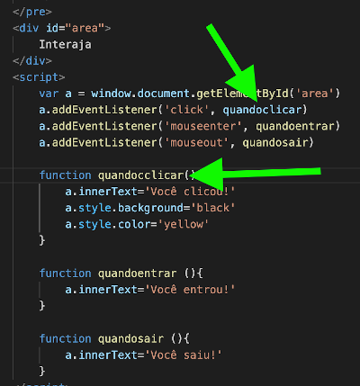

Os eventos DOM é tudo que possa acontecer com essa <div> rosa que criamos abaixo.
<div id="area">
Interaja
</div>
<style>
#area {
background-color: rgb(255, 0, 85);
color: white;
width: 300px;
height: 300px;
font: normal normal 15pt Verdana;
text-align: center;
line-height: 300px;
}
</style>
quando o mouse enconstar na <div>
quando o mouse se movimenta dentro da <div>
quando o usuário clica na <div> e mantém pressionado
quando o usuário solta o botão do mouse que estava pressionado
o simples ato de clicar, sem manter pressionado o botão
quando o mouse sai da área da <div>
Vale a pena pesquisar no Google sobre uma lista de tooooodos os eventos DOM.
Para disparar um evento, é preciso entender funções.
Um bloco de ações/comandos só acontecerá quando acontecer tal coisa. Isso é função. A gente sabe que tudo que a gente escreve no VS Code o navegador roda automaticamente, né? Aí com as funções isso muda. Em JavaScript, o bloco aparece assim:
{
bloco de ações
}
A sintaxe completa é:
function ação (parâmetro) {
bloco
}
Importante lembrar que os eventos podem ser configurados dentro do HTML ou dentro do JavaScript.
Pode ser uma mera letrinha que foi omitida na hora da digitação do código ou alguma palavra escrita errada ou a troca de uma letra maiúscula por minúscula (ou vice versa). Para descobrir porque seu código JavaScript não está rodando no navegador, acesse a ferramenta de "Inspecionar" no Google Chrome. Perceba que no VS Code, o nome da função foi escrita 'quandoclicar' (com 1 c), já no script foi escrito 'quandocclicar' (com 2 c) e isso dá erro.
